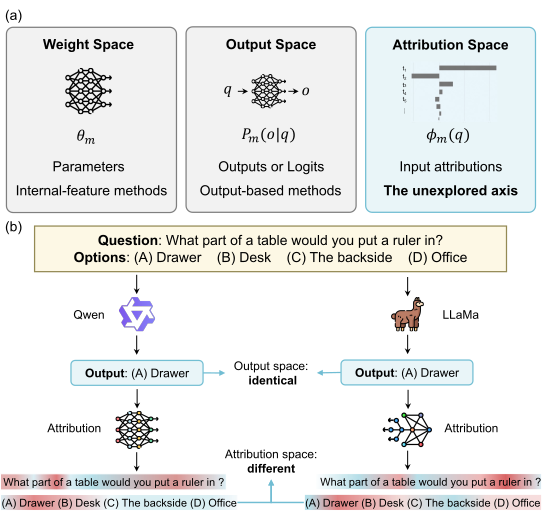
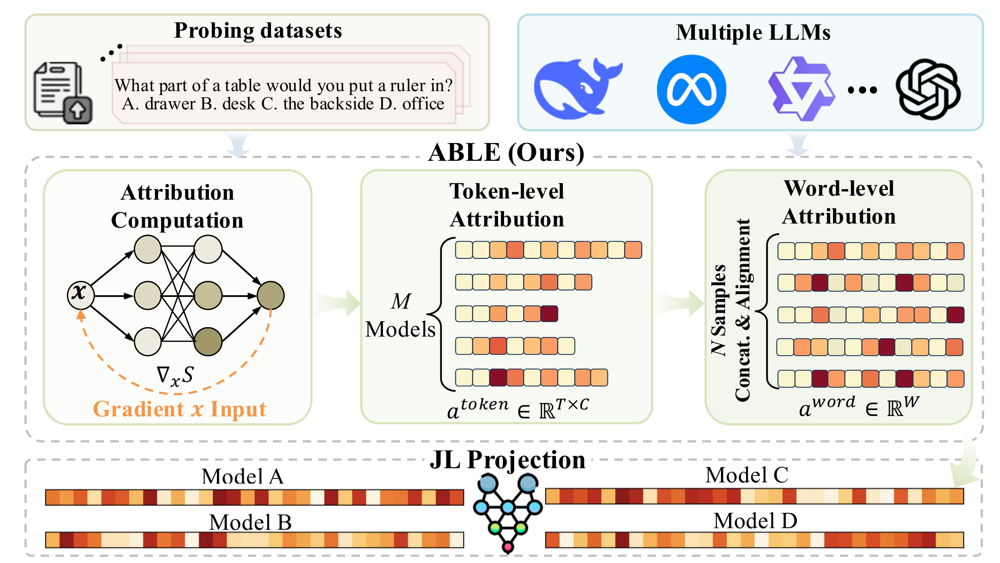

Input-dependence signatures
Option-aware attributions summarize which parts of a shared prompt support each candidate answer.
A training-free framework that represents language models by how they depend on shared input evidence, not only by their parameters or final outputs.
1The Hong Kong University of Science and Technology (Guangzhou)
2Deep Interdisciplinary Intelligence Lab (DI2Lab) · *Corresponding authors

One-line summary
Two language models can return the same answer while relying on different parts of the prompt. ABLE aggregates these input-dependence patterns over a shared probing corpus, aligns them across tokenizers, and turns them into reusable model-level embeddings.
Option-aware attributions summarize which parts of a shared prompt support each candidate answer.
Token scores pass through character spans into a shared word–option coordinate system.
Each embedding is extracted once without updating model parameters, then reused across analyses.
Method
ABLE preserves option-specific attribution channels while removing tokenizer-dependent coordinates.

Compute Gradient × Input for every question token with respect to each option's sequence log-probability. Gold labels are not used.
Distribute token scores over character spans, aggregate by whitespace-delimited words, and concatenate all option channels.
Apply a Johnson–Lindenstrauss random projection to obtain a compact embedding that supports direct model comparison.
Evidence
Evaluated on a purposive collection of open-weight, decoder-only models spanning families, scales, and training types.
Model atlas
A t-SNE view of the 239 embeddings reveals family-level groupings, while some adapted models move toward models with similar task specialization. The visualization summarizes this curated collection; it is not an estimate of model prevalence in the broader ecosystem.
Documented relationships
Mistral-derived models form a compatible neighbor-joining tree, while annotated Llama-2 groups separate in ABLE space.
Capability signals
Leave-one-model-out ridge regression yields Spearman correlations from 0.816 to 0.890 across five leaderboard targets.
Quick start
This smoke test uses five public probes and sshleifer/tiny-gpt2. The paper setting uses the authorized
1,200-probe corpus and the full model list.
Run from the root of a cloned checkout. Only the repository-based editable installation is supported; standard non-editable installs and built wheels do not include the repository data resources.
# Clone ABLE and install its CLI commands in editable mode
git clone https://github.com/ziiroo1126/ABLE.git
cd ABLE
python -m pip install -e .
# 1. Compute option-aware token attributions
able-calculate example_models \
--dataset-name ABLE_dataset_public_1000 \
--max-samples 5 --dtype float32 \
--cache-dir ./models
# 2. Align token attributions at word level
able-convert \
--input-dir ./able/ABLE_dataset_public_1000 \
--dataset-path ./data/selected_data/ABLE_dataset_public_1000.jsonl \
--output-dir ./able/word_level \
--cache-dir ./models
# 3. Construct a compact 256-D embedding
able-project --method jl --dim 256 \
--input-dir ./able/word_level \
--output-dir ./able/able_word_all_options_jl_256_normCitation
Accepted to the EMNLP 2026 Main Conference.
@article{wang2026able,
title={ABLE: Representing and Mapping LLMs via Attribution-Based Large-model Embedding},
author={Wang, Zirui and Hou, Yusen and Liang, Shaofeng and Tian, Bowen and Zhang, Yanlin and Chen, Wenshuo and Yue, Yutao},
journal={arXiv preprint arXiv:2606.07524},
year={2026}
}